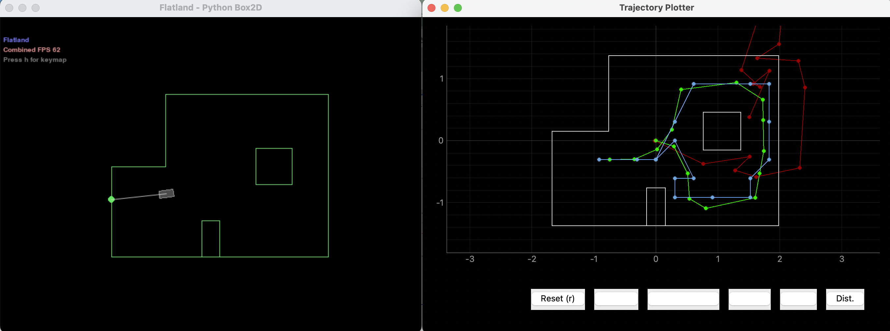
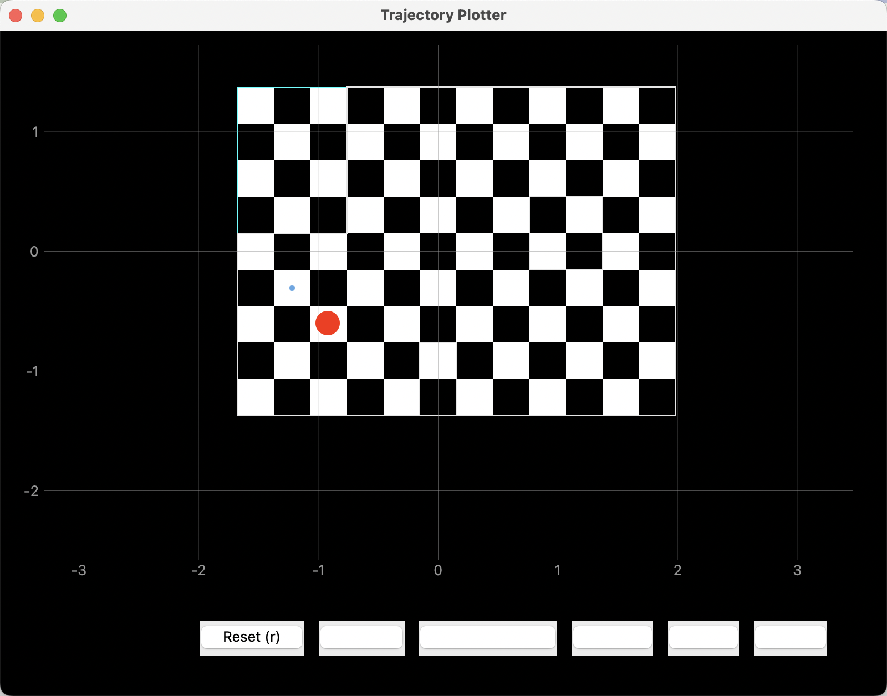
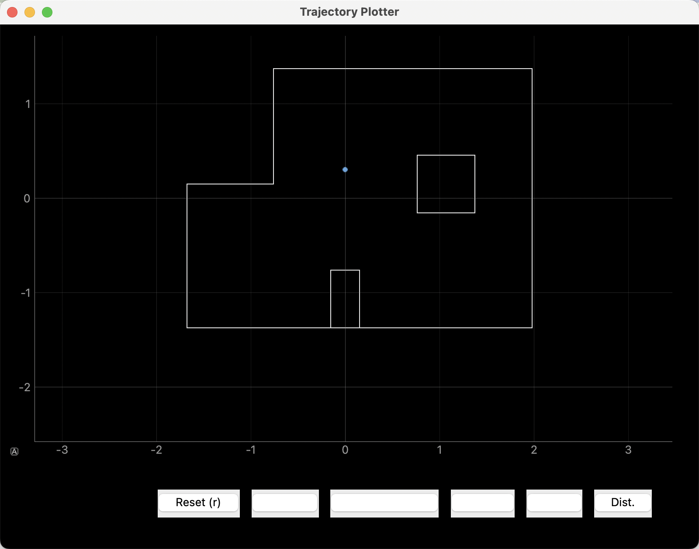
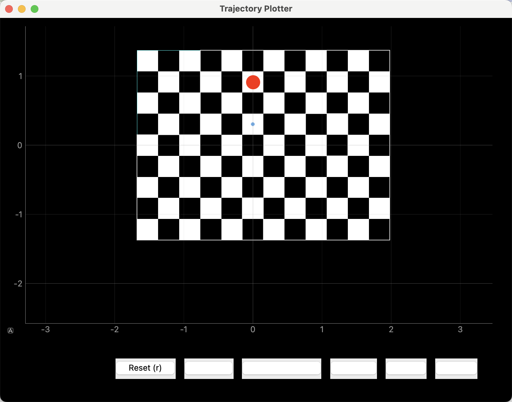
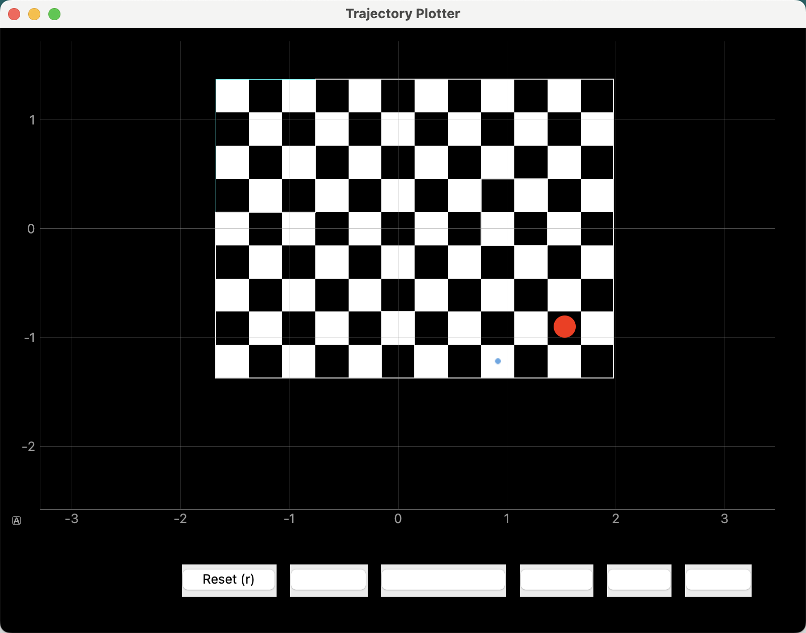
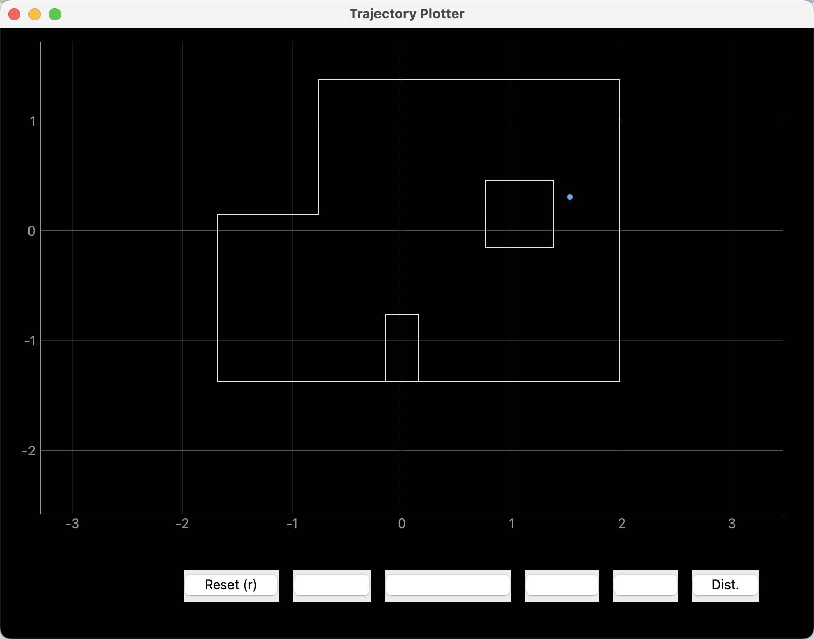
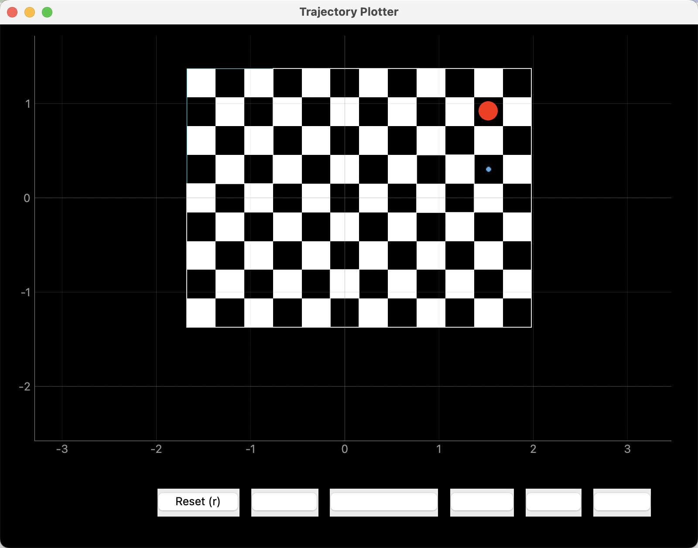

Lab 12 Report
For this lab, we are to perform Bayes Filter's localization on four locations, to see how good
the calculated belife of each location is. And thanks again to the course staff for writing most
of the real robot code. We just need to implement the observation loop function which uses the
real robot.
Task 1
This task is just to see that the given Bayes Filter implementation is correct. See Fig.1 for result.

Fig.1 Simulation Result with Provided Bayes Filter implementation
perform_observation_loop()
This function asks the robot to perform a 360 degree rotation at the same spot, and record 18 TOF readings
at 18 different angles. And return the data as two column np arrays.
I used the code from Lab 9. But with some modifications. What I did in Lab 9 is seperated reading data and
retive data as two robot commands. But now it needs to be in the same function. There is a problem when to
send the data, and keep the Bluetooth connection while the robot is performing the loop.
I tried to implement the functionality by sending a command back telling the laptop robot has done performing the
loop. But that didn't work very consistantly, I just asked the laptop to wait for 30 seconds before trying to parse
the data. And to solve the connection issue, I asked the robot to send back data at every rotation step,
i.e every 20 degrees of rotation. Video and code is attached below:
def perform_observation_loop(self, rot_vel=120):
stri = []
def data_hdl(uuid,strii):
stri.append(ble.bytearray_to_string(strii))
ble.start_notify(ble.uuid['LAB4_STR'], data_hdl)
P = 5
I = 0
D = 100
DC_MAX = 250
time_lim = 1
dest = 25
dead_band = 250
turn_degree = 30
ble.send_command(CMD.LAB12,str(P)+"|"+str(I)+"|"+str(D)+"|"+str(DC_MAX)+"|"+str(time_lim)+"|"+str(dest)+"|"+str(dead_band)+"|"+str(turn_degree))
time.sleep(20)
ble.stop_notify(ble.uuid['LAB4_STR'])
result = []
for s in stri:
result.append(s.split(','))
result = np.array(result).astype(np.float64)
print(result)
sensor_ranges = np.array([result[:,1]]).T/1000
sensor_bearings = np.array([result[:,0]]).T
return sensor_ranges, sensor_bearings
Localization Results
Below, Fig.2 to Fig.9 are the belifes at each location in [(-3,-2), (0,3), (5,-3), (5,3)],w/o grid and with grid.
In the with grid version, the big red dot is the ground truth coordinates.
Fig.2 (-3,-2) w/o grid

Fig.3 (-3,-2) with grid

Fig.4 (0,3) w/o grid

Fig.5 (0,3) with grid
Fig.6 (5,-3) w/o grid

Fig.7 (5,-3) with grid

Fig.8 (5,3) w/o grid

Fig.9 (5,3) with grid
Result Discussion
You can see from the screen shots, I don't have the most accurate result.
I think it is partly due to my robot isn't rotationing exactly in one spot.
And also the TOF isn't too accurate. Though with multiple trails, I think one trail
can yield accurate result. But still, it needs mutiple trails. At (-3,-2) I had
the best results because it's the closest spot I can get multiple trails in, the lab is pretty busy. And for
(0,3) no matter how many trails I've done, it yields poor results. I think it's due to that
the surroundsing is synmatric to the observer.